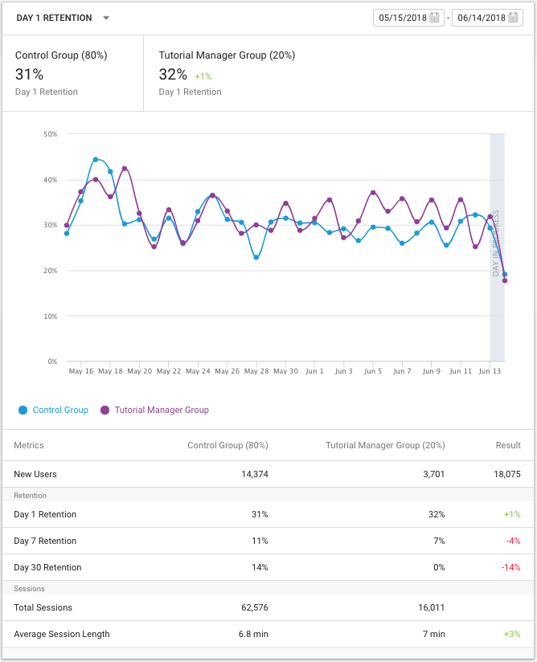
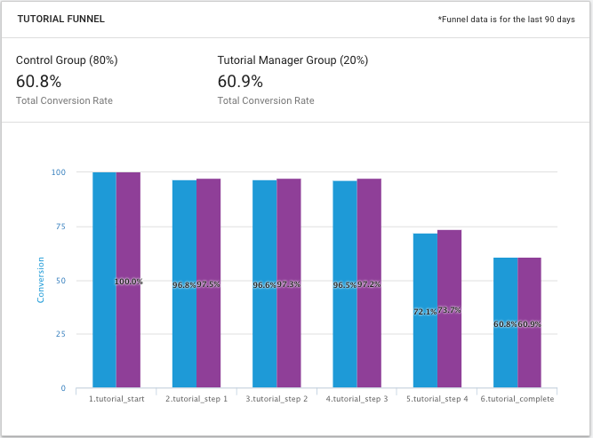

Tutorial Reports
The Tutorial Manager dashboard provides two reports.
The Retention report compares retention results between a control group and test group (the Tutorial Manager group). Players in the control group always see the default tutorial (essentially, GetDecision() always returns true). Players in the test group receive a decision made by the Tutorial Manager machine learning algorithm. Some players will see the default tutorial (GetDecision() returns true); other players will see no tutorial — or your alternate tutorial, depending on your implementation (GetDecision() returns false).

The Retention report
For each tutorial that you create using the Tutorial Editor window, the Tutorial Manager dashboard automatically creates a funnel report. A funnel displays the percentage of player progress from one step to the next. The Tutorial Manager funnel report compares the conversion of players in the control group to that of players in the test (Tutorial Manager) group.

The tutorial funnel
Note: If you set up a tutorial so that it is only played when TutorialManager.GetDecision() returns false, then players in the control group will never see that tutorial. Thus the funnel reports will show zero players from the control group for such tutorials.